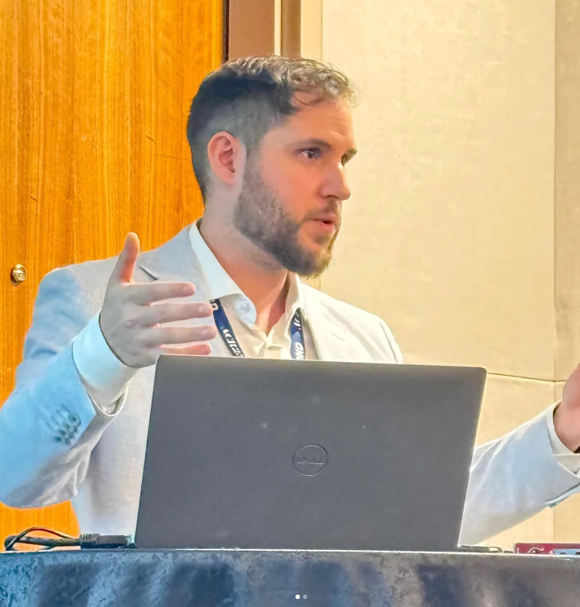
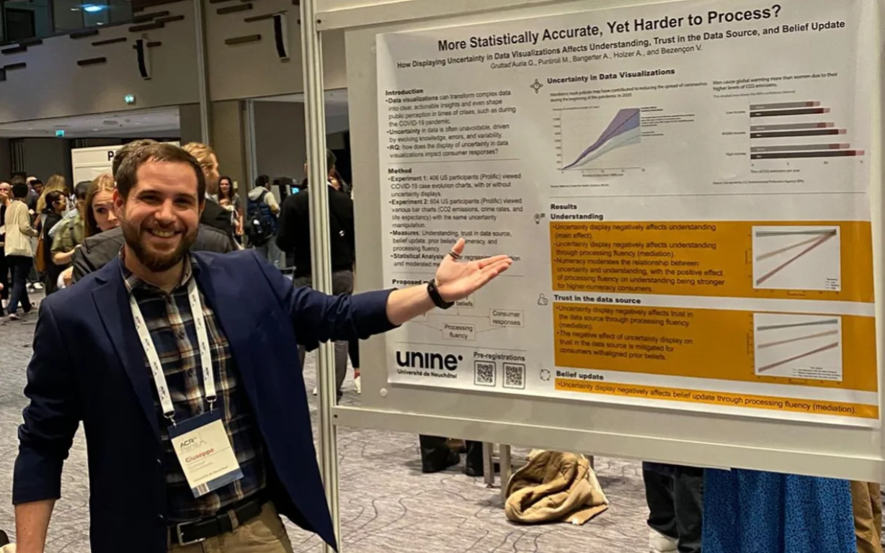

A more informal page for updates outside the main academic sections:
conference moments, talks, visuals, travel snapshots, and occasional posts
that do not fit neatly into the rest of the site.
Recent updates
ACR Annual Conferences
· Washington, D.C.
· Paris
conference
ACR
consumer research
These two moments trace the evolution of the same research stream across my recent ACR conference participation.
In the most recent conference, I chaired a session on displaying uncertainty in data visualizations and presented
a competitive paper, sharing a more developed stage of the project in a structured discussion format.
The year before, I presented an earlier version of this work as a poster (working paper).
Both contributions are connected to my first PhD paper.

ACR2025

ACR2024
A visual experiment idea
· Notes / Side project
data visualization
idea
work in progress
This space is for sketches, screenshots, visual inspirations, or
experimental ideas that are interesting but not (yet) part of a polished project page.
Template idea: add one image, a short paragraph, and 2–3 tags.
This keeps updates lightweight and easy to maintain.
A simple repeatable structure works well:
date + title + 1 short paragraph + tags + (optional) 1–4 images.
This keeps the page visually coherent while remaining flexible.
Public comments
Leave a note (GitHub login required)
For private messages, please use email. For public comments, feedback,
or a quick hello, you can leave a note below.